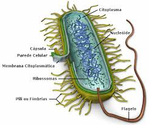
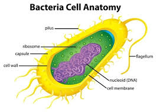

Bactéria pronúncia em português: /bɐˈktɛrjɐ/, do grego: βακτηριον, bakterion, que significa "bastão" é um tipo de célula biológica. Elas constituem um grande domínio de micro-organismos procariontes. Possuindo tipicamente alguns micrômetros de comprimento, as bactérias podem ter diversos formatos, variando de esferas até bastões e espirais.
As bactérias figuram entre as primeiras formas de vida a aparecer na Terra e estão presentes na maioria dos seus habitats. As bactérias habitam o solo, a água, as fontes termais ácidas, os resíduos radioativos e a profunda biosfera da crosta terrestre.
Bactérias também vivem em relações simbióticas e parasitárias com plantas e animais.[2] A maioria das bactérias ainda não foi caracterizada, e apenas em torno de 27 por cento do filo bacterial possui espécies que podem crescer em laboratório (103 dos aproximadamente 142 filos conhecidos não são cultiváveis, conhecidos como filos candidatos. O estudo das bactérias é conhecido como bacteriologia, um ramo da microbiologia.

Praticamente toda a vida animal na Terra depende das bactérias para sobreviver, já que somente bactérias e algumas arqueias possuem os genes e enzimas necessários para sintetizar a vitamina B12 também conhecida como cobalamina, fornecendo-a através da cadeia alimentar. A vitamina B12 é uma vitamina solúvel na água envolvida no metabolismo de todas as células do corpo humano.
Ela é um cofator na síntese do DNA e no metabolismo do ácido graxo e dos aminoácidos. Ela também é particularmente importante no funcionamento normal do sistema nervoso através do seu papel na síntese da mielina.

Normalmente existem 40 milhões de células bacterianas em um grama de solo e um milhão de células bacterianas em um mililitro de água doce.
Existem aproximadamente 5×1030 bactérias na Terra, formando uma biomassa que excede a de todas as plantas e animais. As bactérias são vitais em diversos estágios do ciclo dos nutrientes, reciclando processos como a fixação do nitrogênio da atmosfera.
O ciclo dos nutrientes inclui a decomposição de corpos mortos; bactérias são responsáveis pelo estágio de putrefação nesse processo.[11] Nas comunidades biológicas em torno de fontes hidrotermais e emanações frias, bactérias extremófilas fornecem os nutrientes necessários para sustentar a vida convertendo compostos dissolvidos, como o sulfeto de hidrogênio e o metano, em energia.
Dados relatados por pesquisadores em outubro de 2012 e publicados em março de 2013 sugeriram que as bactérias prosperam na Fossa das Marianas, na qual, com uma profundidade de até 11 quilômetros, é a parte mais profunda conhecida dos oceanos. Outros pesquisadores relataram em estudos relacionados que micróbios prosperam dentro de rochas até 580 metros abaixo do fundo do mar, sob mais de 2 quilômetros de oceano ao largo da costa do noroeste dos Estados Unidos.
De acordo com um dos pesquisadores: "Você pode encontrar micróbios em qualquer lugar - eles são extremamente adaptáveis às condições e sobrevivem onde quer que estejam.